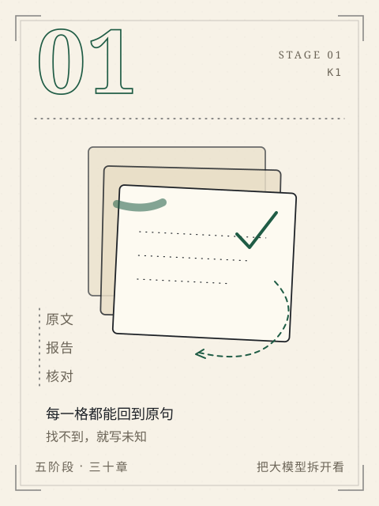

阶段 1 / K1
S1 会使用
先交出一件小事，再谈模型。
面对陌生材料，交付每条事实都能回查、未知与冲突如实保留的报告。
这一阶段不急着理解模型内部。你手上只有一条通知、一份材料、一个要交出去的结果。先学会把原文、转述和结论分开，把缺失和冲突留在报告里，而不是用顺滑的句子把它们抹平。
四章走完一条最小的交付链：读懂材料，写清任务，检查每一格依据，再换一份没见过的通知独立做一遍。你交出的不是一段回答，而是一份可以被下一个人接着办事的资料包。
本阶段章节
- C01先做一份资料报告
把一条通知变成一份每格都能回到原句的资料报告，并学会保留“未知”和“冲突”。
- C02把任务交代清楚
把“帮我整理一下”拆成材料、字段、缺失规则、交付对象和完成标准。
- C03看似合理为什么仍可能错
用引用、范围、否定和冲突四类检查，找出“读起来很顺”却没有依据的句子。
- C04第一次独立交付
换一份没见过的通知，独立完成从材料到交付包的第一次全流程。